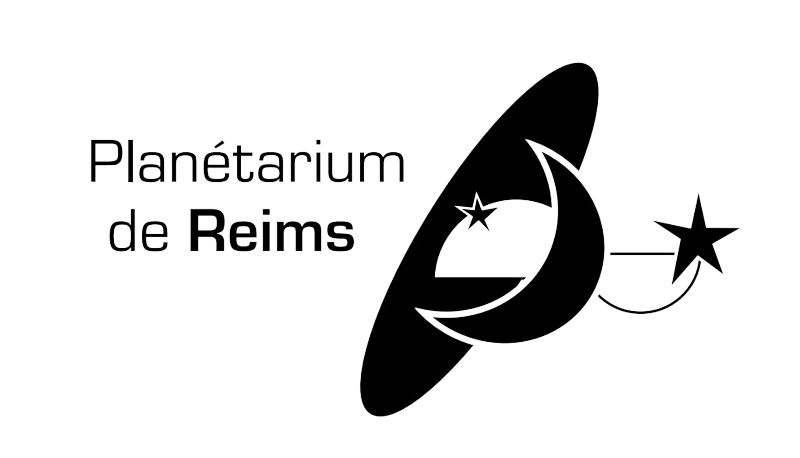

Notre groupe n'étant constituté que de designers graphiques, notre proposition repose essentiellement sur une refonte graphique de l'identité visuelle et de la signalétique. Cette identité serait donc plus simple et radicale, pour laisser plus de présence aux éléments d'espaces et volumes utilisés.
Nous proposons néanmoins de réaménager l'espace d'attente en donnant plus d'espace au planetarium mobile, avec des maquettes de planètes plus en volume, matières et couleurs dont nous proposons ici une signalétique en contraste, en noir et blanc très graphique et épurée.

Quelques images et objets du projet, à retrouver en détail dans le PDF plus bas :
Télécharger le document de présentation du projet pour le découvrir plus en détails : 📂(id_planetarium.pdf, 3.6 Mo)